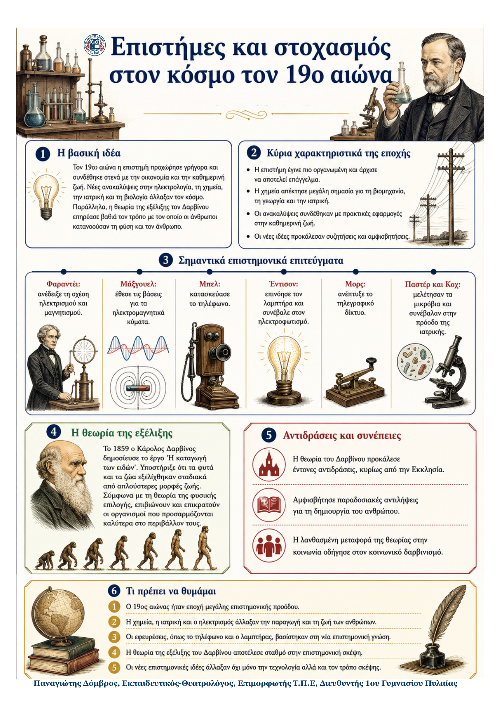

Δεν βρέθηκε η λέξη ή η φράση μέσα στην ενότητα.
1Η βασική ιδέα
Κατά τον 19ο αιώνα η επιστήμη προχώρησε γρήγορα και συνδέθηκε στενότερα με την οικονομία και την παραγωγή. Η χημεία απέκτησε ιδιαίτερη σημασία, επειδή οι εφαρμογές της βοήθησαν τη βιομηχανία, τη γεωργία και την υγεία. Παράλληλα, οι ανακαλύψεις στον ηλεκτρισμό, στις επικοινωνίες και στη μελέτη των μικροβίων άλλαξαν την καθημερινή ζωή. Η θεωρία του Δαρβίνου προκάλεσε νέους τρόπους σκέψης αλλά και έντονες αντιδράσεις.
2Ιστορικό πλαίσιο
- Ο 19ος αιώνας γνώρισε πολλά νέα επιστημονικά επιτεύγματα και περισσότερες πρακτικές εφαρμογές της γνώσης.
- Η επιστήμη άρχισε να γίνεται επάγγελμα. Πάνω από τους μισούς επαγγελματίες επιστήμονες της εποχής ήταν χημικοί.
- Η υφαντουργία ήταν η σημαντικότερη βιομηχανία. Χρειαζόταν συνθετικά υφάσματα και χρώματα, δηλαδή προϊόντα της χημείας.
- Λιπάσματα, εμβόλια και φάρμακα συνέδεσαν την επιστημονική έρευνα με τη γεωργία και την αντιμετώπιση ασθενειών.
3Η επιστημονική πρόοδος σε μία ματιά
| Νέα γνώση | Πρακτική εφαρμογή | Αλλαγή στη ζωή |
|---|---|---|
| Χημεία, ηλεκτρισμός, μαγνητισμός, μικρόβια | Υφάσματα, χρώματα, λιπάσματα, τηλέφωνο, λαμπτήρας, εμβόλια | Ανάπτυξη βιομηχανίας και γεωργίας, νέες επικοινωνίες, καλύτερη προστασία της υγείας |
4Σημαντικά πρόσωπα
Φαραντέι Ανακάλυψε τη σχέση ανάμεσα στον ηλεκτρισμό και τον μαγνητισμό. |
Μάξγουελ Μελέτησε τα ηλεκτρομαγνητικά κύματα και έθεσε τη βάση για νέες εφαρμογές. |
|---|---|
Μπελ Κατασκεύασε το τηλέφωνο. |
Έντισον Επινόησε τον λαμπτήρα και δημιούργησε ηλεκτροπαραγωγικό σταθμό στη Νέα Υόρκη. |
Μορς Εγκατέστησε το πρώτο τηλεγραφικό δίκτυο στις ΗΠΑ. |
Παστέρ και Κοχ Μελέτησαν τα μικρόβια, το εμβόλιο για τη λύσσα και την παστερίωση. |
5Επιστήμες και στοχασμός στον κόσμο τον 19ο αιώνα
Τα κύρια σημεία
Η χημεία κυριάρχησε επειδή έδινε λύσεις σε βασικές ανάγκες της εποχής. Τα συνθετικά υφάσματα και τα χρώματα εξυπηρετούσαν την υφαντουργία. Τα λιπάσματα διευκόλυναν τη γεωργία, ενώ τα εμβόλια και τα φάρμακα βοήθησαν στην καταπολέμηση ασθενειών.
Ο ηλεκτρισμός και οι επικοινωνίες αναπτύχθηκαν χάρη σε διαδοχικές ανακαλύψεις. Η σχέση ηλεκτρισμού και μαγνητισμού, τα ηλεκτρομαγνητικά κύματα, το τηλέφωνο, ο τηλέγραφος και ο λαμπτήρας άνοιξαν τον δρόμο για τον ηλεκτροφωτισμό και για ταχύτερη επικοινωνία.
Η μελέτη των μικροβίων έφερε σημαντικές αλλαγές στην υγεία και στη διατήρηση των τροφίμων. Ο Παστέρ και ο Κοχ μελέτησαν τα μικρόβια. Στο έργο τους συνδέονται το εμβόλιο για τη λύσσα και οι μέθοδοι αποστείρωσης τροφίμων, γνωστές ως παστερίωση.
6Ο Δαρβίνος και η θεωρία της εξέλιξης
Το 1859 ο Κάρολος Δαρβίνος δημοσίευσε το έργο Η καταγωγή των ειδών. Υποστήριξε ότι τα ζώα και τα φυτά προήλθαν, μέσα από αργή εξέλιξη, από λίγα και απλούστερα αρχικά είδη. Οι οργανισμοί μεταβάλλονταν και επικρατούσαν όσοι προσαρμόζονταν καλύτερα στις συνθήκες του περιβάλλοντος.
1. Αρχικά είδη Λίγα και απλούστερα |
2. Μεταβολές Πολλές αλλαγές με τον χρόνο |
3. Προσαρμογή Καλύτερη ανταπόκριση στις συνθήκες |
4. Επικράτηση Φυσική επιλογή |
|---|
Η θεωρία της φυσικής επιλογής προκάλεσε έντονες συζητήσεις και αντιδράσεις, ιδιαίτερα από την Εκκλησία, επειδή αμφισβητούσε τη θρησκευτική εξήγηση για τη δημιουργία του ανθρώπου. Ορισμένοι μετέφεραν αυθαίρετα τη θεωρία στην κοινωνία. Έτσι εμφανίστηκε ο κοινωνικός δαρβινισμός.
7Ορισμοί – γλωσσάρι
Ηλεκτρομαγνητικά κύματα Κύματα που παράγονται από ηλεκτρικά και μαγνητικά φαινόμενα και μεταδίδονται μέσω του αέρα. |
Παστερίωση Μέθοδος αποστείρωσης τροφίμων που συνδέεται με τις έρευνες του Παστέρ. |
|
|---|---|---|
Φυσική επιλογή Η επικράτηση των οργανισμών που προσαρμόζονται καλύτερα στις συνθήκες. |
Κοινωνικός δαρβινισμός Η αυθαίρετη μεταφορά της θεωρίας του Δαρβίνου από τη φύση στην κοινωνία. |
|
Τι πρέπει να θυμάμαι
|
||
